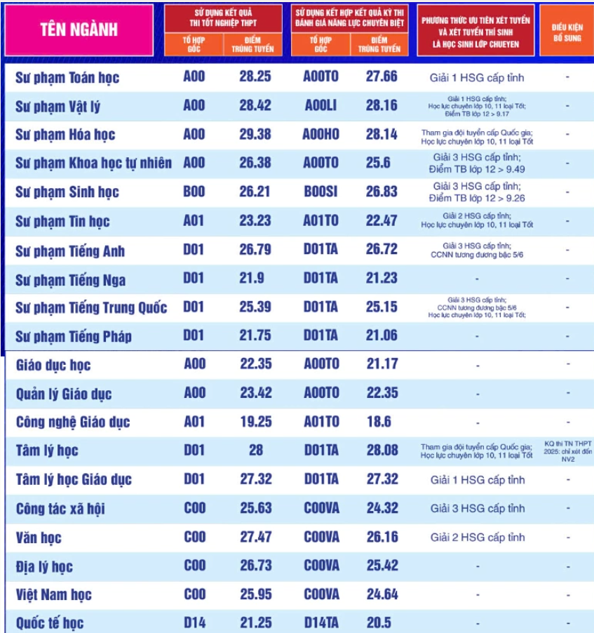
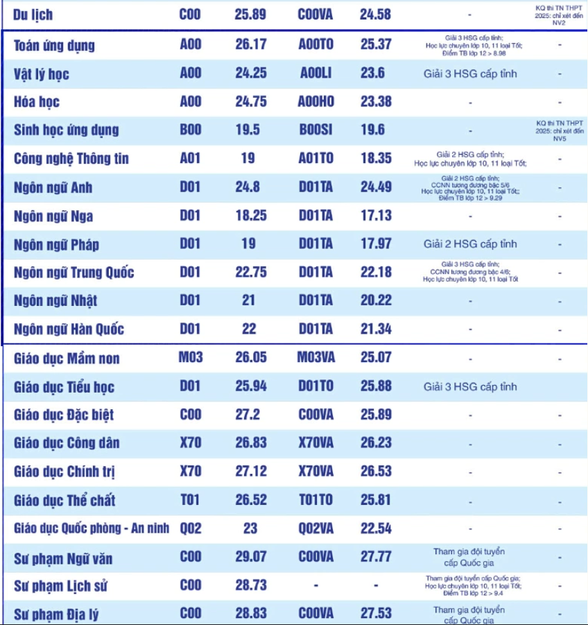

Đại học Sư phạm TP.HCM
Giới thiệu:
Trường Đại học Sư phạm Thành phố Hồ Chí Minh (HCMUE - Mã trường: SPS) là trường đại học sư phạm trọng điểm quốc gia hàng đầu tại phía Nam, trực thuộc Bộ Giáo dục và Đào tạo. Trường nổi tiếng với chất lượng đào tạo giáo viên, khoa học giáo dục, khoa học tự nhiên và xã hội, hướng tới mục tiêu phát triển toàn diện và hội nhập khu vực Đông Nam Á.
Điểm nổi bật
- Đào tạo giáo viên chất lượng cao khu vực phía Nam
- Thế mạnh các ngành Sư phạm Toán, Văn, Anh, Hóa, Sinh.
- Đội ngũ giảng viên giàu kinh nghiệm và chuyên môn cao.
- Môi trường học tập nghiêm túc, kỷ luật tốt.
Điểm chuẩn năm 2025


Phương thức xét tuyển năm 2026
Năm 2026 trường đã đề ra 4 phương thức xét tuyển
- Phương thức 1: Tuyển thẳng và ưu tiên xét tuyển
- Phương thức 2: Xét tuyển thí sinh là học sinh lớp chuyên
- Phương thức 3: Xét tuyển sử dụng kết quả thi tốt nghiệp THPT 2026
- Phương thức 4: Xét tuyển sử dụng kết quả học tập THPT kết hợp thi ĐGNLCB